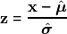
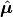
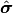
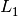
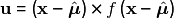
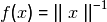
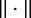
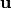

Pre-processing¶
The first step in most meaningful data analytics projects will be to pre-process the data, hence direpack proposes a set of tools for data pre-processing.
Data standardization¶
A first, well accepted way to pre-process data is to center them and scale them to unit variance on a column wise basis. This corresponds to transforming a  variable into z-scores:
variable into z-scores:

where  and  are estimates of location and scale, respectively.
For normally distributed data, the appropriate way to accomplish this is by centering about the mean and dividing by the column wise standard deviation.
However, when the marginal distributions in the data significantly deviate from the normal, outliers could throw the result of that data standardization off, and robust or nonparametric alternatives become a more reliable choice.
Essentially, all robust statistics are subject to a trade-off between efficiency and robustness, which means that the variance of the estimates will increase as the estimator can resist a higher fraction of outliers.
While scikit-learn provides highly robust nonparametric standardization in its RobustScaler, the estimators included therein are known to have a low statistical efficiency (these are the median for location and the interquartile range for scale).
Since autoscaling the data is often an essential step, a few location and scale estimators have been implemented. For location, with increasing performance in terms of the robustness—efficiency trade-off, these are: the column wise median, the spatial median (also called -median, although it minimizes an  norm) and the
norm) and the  step least trimmed squares (LTS, Rousseeuw and Leroy (1987)) estimator.
For scale, the consistency corrected median absolute deviation (MAD) and the
step least trimmed squares (LTS, Rousseeuw and Leroy (1987)) estimator.
For scale, the consistency corrected median absolute deviation (MAD) and the  estimator of scale (Maronna and Zamar 2002) have been included. Generally, it holds true that the more statistically efficient the estimator in these lists is, the higher its computational cost. In preprocessing, these estimators can be accessed through its VersatileScaler class, which takes the names of these estimators as strings, but it will also accept functions of location and scale estimators, should the user prefer to apply other ones.
estimator of scale (Maronna and Zamar 2002) have been included. Generally, it holds true that the more statistically efficient the estimator in these lists is, the higher its computational cost. In preprocessing, these estimators can be accessed through its VersatileScaler class, which takes the names of these estimators as strings, but it will also accept functions of location and scale estimators, should the user prefer to apply other ones.
Spatial sign pre-processing¶
Besides standardizing data, it can be beneficial to transform data to some sort of signs. The generalized spatial sign transformation consists of transforming a variable into

where the spatial sign is obtained by setting  and  denotes the norm (in all published literature in this context, the norm).
Since spatial sign pre-processing (SS-PP) consists of dividing the data by their Euclidean norm, it is also known as normalizing and as such, is available in scikit-learn’s Normalizer.
Spatial sign pre-processing has been shown to convey moderate robustness to multivariate estimators that are entirely based on covariance estimates, such as PCA or PLS (Serneels, De Nolf, and Van Espen 2006).
Moderate robustness means in this case that the resulting estimator can resist up to 50% of outliers, but will have a sizeable bias even for small fractions of contamination. The reason why this happens
is that the spatial sign transform projects all cases onto the unit sphere indiscriminately, which can drastically change data topology, and thereby introduce bias. Recently, the generalized spatial sign transform has been proposed (Raymaekers and Rousseeuw 2019).
These authors examine a set of different functions that can be plugged into the expression for , some of which will only transform those cases in the data that exceed a certain eccentricity threshold. These functions are the quadratic radial, ball, shell, Winsor and linear redescending (LR) functions, all of which can be accessed through direpack’s GenSpatialSignPreprocessor.
Usage¶
Created on Sun Feb 4 2018 Updated on Sun Dec 16 2018 Refactored on Sat Dec 21 2019 Refactored on Sat Mar 28 2020
Class for classical and robust centering and scaling of input data for regression and machine learning
Version 2.0: Code entirely restructured compared to version 1.0. Code made consistent with sklearn logic: fit(data,params) yields results. Code makes more effciient use of numpy builtin estimators. Version 3.0: Code now takes strings or functions as input to centring and scaling. Utility functions have been moved to _preproc_utilities.py Code now supplied for l1median cetring, with options to use different scipy.optimize optimization algorithms Version 4.0: Made the API compatible for ScikitLearn pipelines. However, some nonstandard functions and output remain for backwards compatibility. Functionality for sparse matrices still has to be implemented.
- param center
function to be used, or ‘None’.
- type center
str or callable, location estimator. String has to be name of the
- param scale
- type scale
str or callable, scale estimator
- param trimming
- type trimming
trimming percentage to be used in location and scale estimation.
-
`fit(X)`: Will estimate location and scale using the estimators specified in ‘center’ and ‘scale’, with a certain trimming fraction when applicable.
-
`transform(X)`: Will scale X about estimated location and scale. Stores the result as ‘Xs_`
-
`fit_transform(X)`: both of the above
-
`predict(X)`: Same as `transform`, but does not store the result (different from sklearn, can be convenient for some ML tools)
-
`inverse_transform()`: transform the scaled data frame back to the original scale. When no input provided, will use the scaled datas_ in the object.
- Arguments for methods:
X: array-like, n x p, the data. trimming: float, fraction to be trimmed (must be in (0,1)).
Ancillary functions in _preproc_utilities.py: scale_data(X,m,s): centers and scales X on center m (as vector) and
scale s (as vector).
mean(X,trimming): Column-wise mean. median(X): Column-wise median. l1median(X): L1 or spatial median. Optional arguments:
x0: starting point for optimization, defaults to column wise median method: optimization algorithm, defaults to ‘SLSQP’ tol: tolerance, defaults to 1e-8 options: list of options for scipy.optimize.minimize
- `kstepLTS(X): k-step LTS estimator of location.
maxit: int, number of iterations to compute maximally tol: float, tolerance for convergence
std(X,trimming): Column-wise std. mad(X,c): Column-wise median absolute deviation, with consistency factor c. scaleTau2(x0, c1 = 4.5, c2 = 3, consistency = True): Tau estimator of scale
with consistency parameters c1 and c2 and option for consistency correction (True, False or ‘finiteSample’)
Remarks¶
Options for classical estimators ‘mean’ and ‘std’ also give access to robust trimmed versions.
@author: Sven Serneels, Ponalytics
Created on Wed Mar 25 09:01:53 2020
@author: Sven Serneels, Ponalytics, Mar 2020.
-
class
direpack.preprocessing.gsspp.GenSpatialSignPrePprocessor(center='l1median', fun='linear_redescending')[source]¶ Generalized Spatial Sign Pre-Processing as a scikit-learn compatible object that can be used in ML pipelines.
- Inputs:
- center: str or function, location estimator for centring.
str options: ‘mean’, ‘median’, ‘l1median’, ‘kstepLTS’, ‘None’
- fun: str or function, radial transformation function,
str options: ‘ss’ (the non-generalized spatial sign, equivalent to sklearn’s Normalizer), ‘ball’, ‘shell’, ‘quad’ (quadratic), ‘winsor’, or ‘linear_redescending’
- Methods: sklearn API: fit(X), transform(X) and fit_transform(X) with
X: Data matrix
-
`'gss_'` the generalized spatial signs
-
`'Xm_'` the centred data
-
`'centring_'` VersatileScaler centring object
-
`'X_gss_pp_'` Data Ppreprocessed by Generalized Spatial Sign
References¶
Maronna RA, Zamar RH (2002). “Robust estimates of location and dispersion for high-dimensional datasets.” Technometrics, 44(4), 307–317.
Rousseeuw PJ, Leroy AM (1987). Robust Regression and Outlier Detection. Wiley and Sons, New York
Raymaekers J, Rousseeuw PJ (2019). “A generalized spatial sign covariance matrix.” Journal of Multivariate Analysis, 171, 94–111.
Serneels S, De Nolf E, Van Espen PJ (2006). “Spatial Sign Preprocessing: A Simple Way ToImpart Moderate Robustness to Multivariate Estimators.” Journal of Chemical Information and Modeling, 46, 1402–1409.